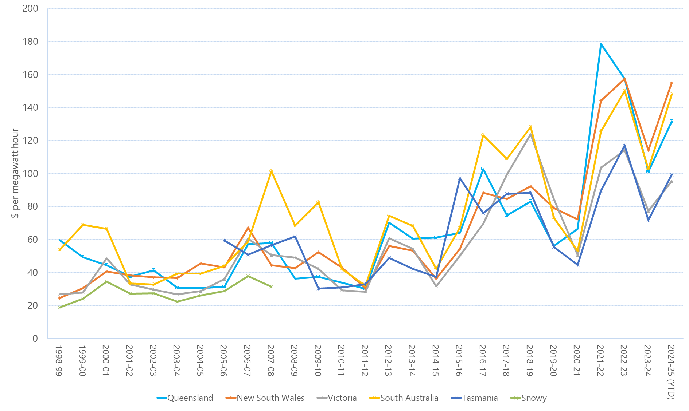

Energy Price Is Going Up
 Source: Australian Energy Regulator
The price of electricity in Australia has increased by 56% over the past decade and is expected to continue rising. This is due to increasing costs of electricity generation, network maintenance, and government environmental schemes.
According to Endesa, TVs are one of the most power-consuming appliances in households.
 Source: How can you calculate the electricity a house consumes? Endesa.
Source: How can you calculate the electricity a house consumes? Endesa.
To keep electricity costs down, it is crucial to use energy-efficient appliances. Here are some key insights to consider when selecting an energy-efficient television.